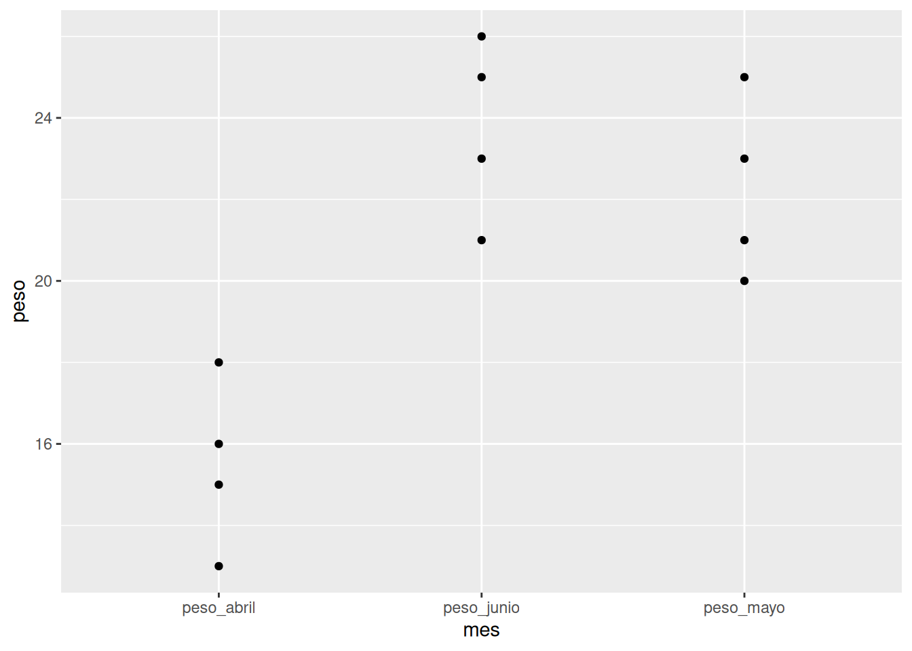
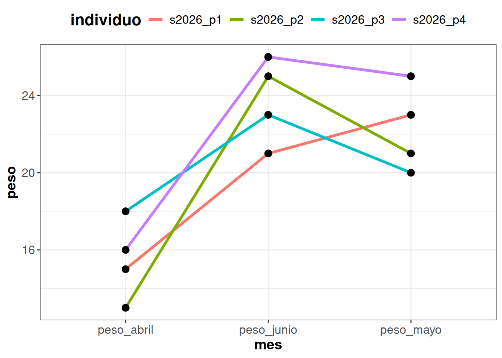

library(tidyverse)
datos_df <- data.frame(x = 1:3, y = c("a", "b", "c"))
datos_df
## x y
## 1 1 a
## 2 2 b
## 3 3 c
datos_tb <- tibble(x = 1:3, y = c("a", "b", "c"))
datos_tb
## # A tibble: 3 × 2
## x y
## <int> <chr>
## 1 1 a
## 2 2 b
## 3 3 c
datos_tb2 <- as_tibble(datos_df)
datos_tb2
## # A tibble: 3 × 2
## x y
## <int> <chr>
## 1 1 a
## 2 2 b
## 3 3 c4. Tibbles y tidyverse
4.1. De data frames a tibbles
Un tibble es una versión moderna del data.frame, es decir, es una tabla. Mantiene la organización en filas y columnas, pero ofrece una impresión más clara y un comportamiento más consistente al seleccionar y modificar columnas.
Un tibble sigue siendo un tipo de data.frame, por lo que puede utilizarse con la mayoría de las funciones que trabajan con tablas.
Algunas de las ventajas de tibble frente a data frames son:
- muestran solo las primeras filas y las columnas que caben en pantalla;
- indican el tipo de dato almacenado en cada columna;
- da las dimensiones de la tabla;
- se integran de forma coherente con los paquetes del tidyverse;
- evitan algunos comportamientos automáticos de los data.frame;
- suele generar mensajes de error más informativos.
Se puede crear mediante la función tibble() o convertirse desde otro objeto mediante as_tibble().
4.2. ¿Qué es el tidyverse?
El tidyverse es un ecosistema de paquetes para ciencia de datos que comparten una filosofía de diseño, estructuras de datos y sintaxis coherentes, que permiten preparar, procesar y graficar bases de datos.
El paquete tidyverse funciona como un metapaquete está compuesto en la actualidad por 9 paquetes:
Este entorno de paquetes sustituye cómo se trabaja (crean variables nuevas, se hacen filtros, etc.) respecto a R base. Es importante pensar que aunque son formas distintas de escribir no son excluyentes, sino complementarias, y que a veces nos resultará mejor utilizar una u otra.
4.3. Datos ordenados o tidy data
Existen muchas maneras de organizar los datos en una tabla. Los datos ordenados o tidy data siguen una estructura regular y lógica para ordenar datos en una tabla. Un conjunto de datos es tidy cuando:
- cada variable ocupa una columna;
- cada observación ocupa una fila;
- cada valor ocupa una celda.
El formato ancho (wide), los valores de una misma variable pueden estar distribuidos entre varias columnas. Esto es frecuente cuando se realizan varias mediciones sobre la misma unidad de observación.
Individuo peso_abril peso_mayo peso_junio s2026_p1 15 23 21 s2026_p2 13 21 25 s2026_p3 18 20 23 s2026_p4 16 25 26 El formato largo (long) suele facilitar que los datos cumplan los principios de tidy data, pero una tabla en formato long no es necesariamente tidy si no respeta las tres reglas anteriormente mencionadas.
Individuo Mes Peso s2026_p1 Abril 15 s2026_p1 Mayo 23 s2026_p1 Junio 21 s2026_p2 Abril 13 s2026_p2 Mayo 21 s2026_p2 Junio 25 s2026_p3 Abril 18 s2026_p3 Mayo 20 s2026_p3 Junio 23 s2026_p4 Abril 16 s2026_p4 Mayo 25 s2026_p4 Junio 26
¿Qué pasaría si queremos añadir otra variable, por ejemplo longitud del ala cada mes? En el formato largo añadiríamos una sola columna, longitud_ala, mientras que en el formato ancho necesitaríamos tres columnas, una por mes (lon_abr, lon_may, lon_jun).
4.4. El operador pipe
Una pipe (tubería) es un separador especial que permite encadenar varias operaciones: toma el objeto a su izquierda como primer argumento de la función a su derecha. Esto permite escribir una secuencia de operaciones en el mismo orden en que se realizan y permite escribir el código de manera más limpia y natural.
El operador |> está disponible a partir de la versión R 4.1 y no requiere cargar ningún paquete.
El operador %>% pertenece al paquete magrittr y tiene la misma funcionalidad. Este operador se carga al cargar su paquete o library(tidyverse)
El operador |> es reciente. Lo más normal es que sigas encontrando el operador de magrittr %>% en la mayoría de tutoriales, libros y scripts.
Un truco para escribir rápidamente el operador es pulsar
CTRL + SHIFT + M. En la actualidad este atajo devuelve|>, antes este atajo escribía%>%. Si prefieres que continue escribiendo la pipe de magrittr debes ir aTools/Gobal options/Codey desmarcar la casilla*use native pipe operator, |>*.
Las pipes parecen raras al principio, pero permiten que nuestro código sea mucho más legible y entendible por un humano:
x <- c(3, 6, 1)
## Sin pipe
round(exp(diff(log(x))), 1)
## [1] 2.0 0.2
## Con pipe
x |> log() |> diff() |> exp() |> round(1)
## [1] 2.0 0.2Coge el vector x, calcula su logaritmo, luego la diferencia de cada elemento con el anterior, halla su exponencial y redondea a una cifra decimal.
x %>% log() %>% diff() %>% exp() %>% round(1) # mismo resultado
4.5. Principales paquetes del tidyverse
readrproporciona funciones para importar tablas en diferentes formatos de texto. Una de sus funciones más utilizadas esread_csv(), que permite importar archivos CSV (Comma Separated Values).
Otro paquete similar, también desarrollado por Hadley Wickham pero no incluido en el tidyverse, es
readxl(). Este paquete provee funciones para leer archivos en formato Excel (.xls y .xlsx)
tidyrproporciona funciones para reorganizar datos y facilitar que cumplan los principios de tidy data. Dos de sus funciones principales son:pivot_wider(): agrupar datos de varias columnas en una sola. Para pasar de wide a long.
pivot_long(): “extender” los datos de una columna en varias. Para pasar de long a wide.
En ambos casos la nomenclatura es muy parecida:
pesos <- tibble(individuo = c("s2026_p1", "s2026_p2", "s2026_p3", "s2026_p4"),
peso_abril = c(15, 13, 18, 16),
peso_mayo = c(23, 21, 20, 25),
peso_junio = c(21, 25, 23, 26))
pesos
## # A tibble: 4 × 4
## individuo peso_abril peso_mayo peso_junio
## <chr> <dbl> <dbl> <dbl>
## 1 s2026_p1 15 23 21
## 2 s2026_p2 13 21 25
## 3 s2026_p3 18 20 23
## 4 s2026_p4 16 25 26
pesos_long <- pesos %>%
pivot_longer(cols = starts_with("peso_"),
names_to = "mes",
values_to = "peso")
pesos_long
## # A tibble: 12 × 3
## individuo mes peso
## <chr> <chr> <dbl>
## 1 s2026_p1 peso_abril 15
## 2 s2026_p1 peso_mayo 23
## 3 s2026_p1 peso_junio 21
## 4 s2026_p2 peso_abril 13
## 5 s2026_p2 peso_mayo 21
## 6 s2026_p2 peso_junio 25
## 7 s2026_p3 peso_abril 18
## 8 s2026_p3 peso_mayo 20
## 9 s2026_p3 peso_junio 23
## 10 s2026_p4 peso_abril 16
## 11 s2026_p4 peso_mayo 25
## 12 s2026_p4 peso_junio 26
pesos_wide <- pesos_long %>%
pivot_wider(names_from = mes,
values_from = "peso")
pesos_wide
## # A tibble: 4 × 4
## individuo peso_abril peso_mayo peso_junio
## <chr> <dbl> <dbl> <dbl>
## 1 s2026_p1 15 23 21
## 2 s2026_p2 13 21 25
## 3 s2026_p3 18 20 23
## 4 s2026_p4 16 25 26dplyres la esencia del tidyverse. Proporciona un conjunto coherente de funciones, denominadas verbos, que permiten manipular fácilmente nuestra tabla. Algunas de las funciones más importantes son:select,rename,filter,mutate,group_by,summarise,arrange.ggplot2permite construir gráficos mediante una gramática de gráficos por capas a partir de una tabla. La base de cualquier gráfico escrito con ggplot2 está en definir:ggplot()los datos que se van a utilizar,aes()relaciona las variables de la tabla con propiedades visuales (ejes, color, tamaño, forma),geom_*()cómo representar esos valores.
ggplot(data = pesos_long, # qué datos vamos a usar
aes(x = mes, y = peso)) + # qué vamos a pintar
geom_point() # qué vamos a dibujar, en este caso puntos
Las correspondencias definidas en
ggplot(aes(...))se aplican por defecto a todas las capas. Pueden definirse dentro de una capa concreta cuando sólo deben afectar a esa geometríageom_point(aes(...)).
ggplot(data = pesos_long, aes(x = mes, y = peso)) +
geom_line(aes(color = individuo, group = individuo), linewidth = 1.3) +
geom_point(size = 3) +
theme_bw() +
theme(axis.title = element_text(size = 14, face = "bold"),
axis.text = element_text(size = 12),
legend.title = element_text(size = 16, face = "bold"),
legend.text = element_text(size = 12),
legend.position = "top"
)
ImportanteAhora… TÚ!
0A. Crea una carpeta nueva en el ordenador que se llame stats_intro_r
Dentro de esa carpeta, crea otra carpeta llamada datos. Descarga los siguientes archivos y colócalos en la carpeta que acabas de crear: pasajeros_aereos.csv , cinturones.csv , paris.zip , arboles_nyc.csv .
0B. Abre un nuevo script. Servirá para practicar la conversión entre datos en formato long y formato wide.
0C. En el preámbulo del script (al principio):
- Pon un comentario explicando qué va a hacer el script
- Fija la carpeta que has creado como directorio de trabajo
- Carga el tidyverse
Acostúmbrate a realizar estos pasos siempre que comiences a escribir en un script.
1. Tidy data
1A. Importa el fichero pasajeros_aereos.csv usando la función read_csv y guárdalo como un objeto.
Este fichero contiene números de pásajeros aéreos por mes y año en forma de tabla.
1B. ¿En qué formato están los datos? Conviértelos a formato tidy usando la función pivot_wider. Guarda el nuevo data frame con otro nombre.
Pista: tendrás que evitar que la columna
yearsea seleccionada.
1C. Vuelve a convertir la nueva tabla que has creado a formato wide usando la función pivot_longer. Guarda el resultado como otro objeto.
2. Principales paquetes del tidyverse: dplyr
La ley que obliga a los conductores a llevar cinturón en Reino Unido entró en vigor en enero de 1983. El archivo "cinturones.csv" contiene información sobre fallecimientos en carretera entre enero de 1969 y diciembre de 1984. Vamos a utilizar R para analizarlo y comprender si la entrada en vigor de la ley cambió algo.
2A. Importa el fichero cinturones.csv y guárdalo como un objeto.
2B. Análisis exploratorio: 1. ¿Qué columnas contiene el objeto? Puedes usar la función head o glimpse para saberlo. 2. Haz un histograma de las columnas que te parezcan interesantes. Usa el operador $ para acceder a las columnas del data frame. 3. Usa la función ggplot para obtener un gráfico del número de conductores fallecidos. ¿Ves alguna tendencia?
2C. Sólo nos interesan las columnas year, month, conductores_fallecidos, conductores y ley. Selecciónalas usando la función select.
2D. No podemos comparar el número de fallecimientos de un año a otro porque el número de conductores es distinto. Crea una nueva columna fallecidos_tasa que muestre la tasa de fallecidos en cada mes.
2E. Queremos comparar el porcentaje de fallecidos antes y después de la entrada en vigor de la ley. No obstante, hay muchos más datos de antes que de después. Filtra los datos para tener en cuenta solo aquellos ocurridos a partir de 1980.
2F. Por último, vamos a ver en qué años era mayor la tasa de fallecidos. Usa las funciones group_by y summarise para obtener la media de la tasa en cada grupo.
Pista: Tendrás que agrupar por la variable
ley.
3. Automatización
Podemos usar R y el tidyverse para procesar simultáneamente multitud de ficheros. En el fichero paris.zip encontrarás 17 archivos con datos de reservas de AirBnB en París para distintos momentos de tiempo.
3A. Descarga el fichero y extráelo sus contenidos en una carpeta de tu proyecto llamado datos_paris.
3B. Abre un nuevo script y haz de esa carpeta tu directorio de trabajo. No te olvides de comentar al principio la función del script y de cargar las librerías.
3C. Vamos a explorar los contenidos del primero de estos ficheros:
Impórtalo usando
read_csv.Usa la función
glimpsepara ver qué columnas tiene.¡Demasiadas! Usa la función
selectpara quedarte solo con:neighborhood,reviews,overall_satisfaction,bedroomyprice.Vamos a comparar los apartamentos disponibles en distintos barrios. Agrupa tus datos por barrio (“neighborhood”) y obtén la media del precio, las valoraciones (“reviews”) y satisfacción general (“overall_satisfaction”).
Obtén también el número de apartamentos en cada barrio.
Pista: tendrás que usar la función
n()dentro desummarize.Crea una nueva carpeta en tu carpeta de proyecto que se llame
paris_procesados.Guarda ahí tus datos en un nuevo CSV usando la función
write_csv.Seguramente hayas hecho esto en varias líneas (y esto está genial para ir probando). Vamos a simplificar el script encadenando todas las funciones con pipes (
%>%)
3D. Obtener estos datos para un fichero está bien pero podemos hacer más.
Usa un bucle y la función list.files para repetir el proceso anterior con todos los ficheros de datos.
¿Cómo puedes guardar estos ficheros automáticamente con distinto nombre? Una opción sería usar el nombre original (contenido en list.files) junto con la función paste y la opción sep = "" (para que no aparezcan las dos strings separadas por espacios) . ¿Se te ocurren otras?
Inténtalo un par de veces. Si esto no te sale, consulta la solución en
solucion_paris_automatizado.R.
Para poner nombres distintos podrías usar la función gsub para cambiar la terminación de los ficheros. Por ejemplo:
Mostrar código
fichero <- "tomslee_airbnb_paris_0005_2013-11-27.csv"
nombre_guardar <- gsub(".csv", "_agregados.csv", fichero)4. Visualización de datos: ggplot2
Vamos a visualizar algunas propiedades de los árboles plantados en Nueva York. >Utiliza el paquete ggplot y explora sus posibilidades.
4A. Importa el fichero arboles_nyc.csv
4B. Crea un gráfico de nube de puntos (scatter plot) poniendo longitude en el eje X y latitude en el eje Y.
4C. No se ve mucho en nuestro mapa. Haz que el color del punto sea el de la especie plantada y fija la transparencia a 0.5
Tendrás que usar la opción
alphadentro degeom_pointpara fijar la transparencia.
4D. ¡Mucho mejor! Saca ahora un histograma de los diámetros (tree_dbh)
4E. Está bien, pero no nos da información por especie. Crea un gráfico de cajas y bigotes (boxplot) para ver cómo varía el diámetro por especie.